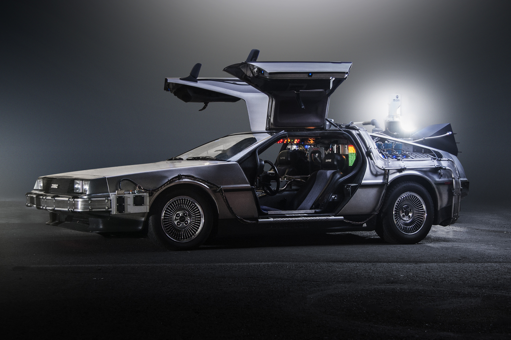

Символ Хилл-Вэлли. В часы попала молния 12 ноября 1955 года в 22:04. Именно в этот момент Марти должен получить энергию для возвращения в 1985-й.
Реальные съёмки: Здание суда, Universal Studios, Hollywood.
Центр города. Здесь Док впервые показал Марти DeLorean. В 1955 году здесь находились магазины, аптека, театр.
Реальные съёмки: Universal Studios Backlot, Courthouse Square.
Место, где Док тестировал машину времени и где Марти впервые перенёсся в 1955 год. В прошлом — ферма Питера, в будущем — парковка.
Лаборатория в гараже. Здесь родился DeLorean, хранятся радиоактивные материалы, плутоний и собака Эйнштейн.

Нержавеющая сталь, подъёмные двери «крыло чайки», задний привод. Единственный экземпляр, способный развить 88 миль в час и активировать конденсатор потока.
Полный плейлист из фильма «Назад в будущее». Хиты 50-х и 80-х, главная тема Алана Сильвестри.
Huey Lewis & The News
Композитор Алан Сильвестри создал одно из самых узнаваемых произведений в истории кино. Главная тема сочетает энергию приключений и футуристическое звучание. В фильме также звучат хиты 1950-х: «Earth Angel», «Mr. Sandman» и «Johnny B. Goode» в исполнении Майкла Джей Фокса (вокал Марка Кэмпбелла).